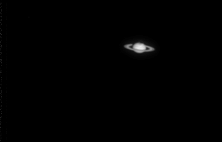

Cookbook CCD on Saturn
While Mars is a bit too bright for our Cookbook camera, Saturn is just fine. This image was assembled from three quarter-second exposures taken by Krzysztof Findeisen. Because we had trouble focusing the camera, the image was slightly contrast-enhanced so the ring structure would be easier to see.
